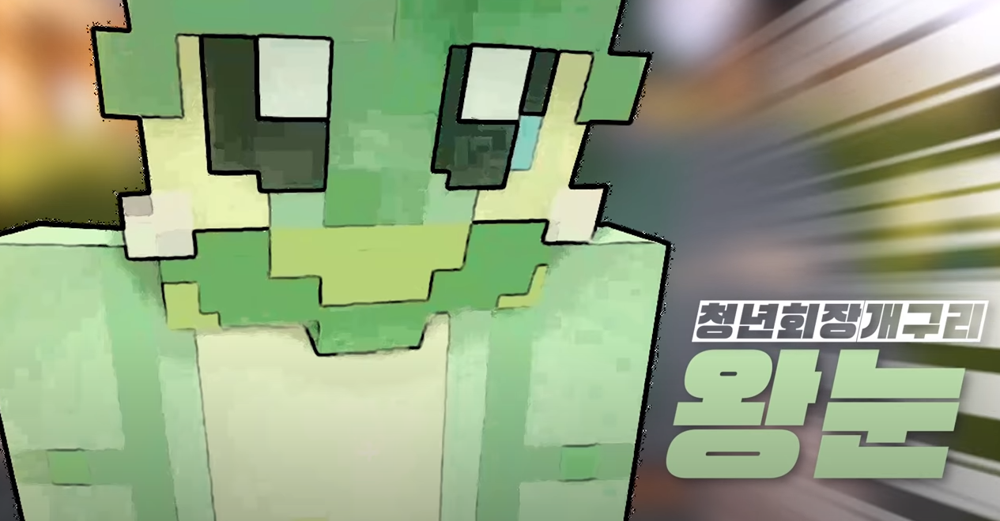

“아.아. 우정리 주민 여러분께 안내방송 드리겄소잉~”
“아니..그래도 됐..아니...아 뭐 좀 너무한 것 아녀?”
“떡상이여, 떡상,아핳하하!!!!!”
“인자 쪼끔 토끼 같구먼”
“그려, 이거 빱댁 하나 하더라고.”
|  |
| 우정리의 청년회장 개구리, ‘나 왕눈’. |
| 이름 | 나왕눈 | 대표색 | #88aa48 |
| 동물 | 개구리 | 아이콘 | |
| 나이 | 27세 | 직업 | 청년회장 |
청년회장이기 때문인지 마을에 온 지 얼마 안 된 자빱을 특히 잘 챙긴다. 우정리에 도착한 자빱을 마중하며 자빱이 마을 사람들과 안면을 제대로 익히도록 미션을 부여한 주민이기도 하다.
매회차 샤따를 내릴테니 집으로 들어가라고 방송하는데, 마을을 돌아다니는 자빱한테 화내는 것도 왕눈의 담당이다.
매 회차마다 마을 주민을 대상으로 송출되는 방송 역시 왕눈의 몫이다.
현재 우정리 주민 중 우정리에 가장 오래 거주한 주민이다.
가장 좋아하는 음식은 일명 개구리들의 특식인 여왕벌.